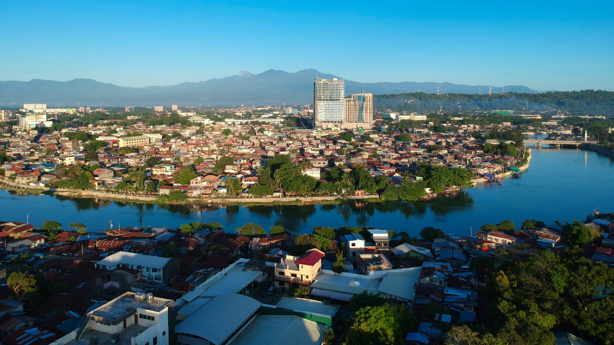

Smart Cities
Learn about the development of smart cities and digital transformation in the Philippines.
Smart Cities in the Philippines
Smart cities use technology and innovation to improve urban living—making cities more efficient, sustainable, and responsive to citizens' needs. In the Philippines, cities are embracing digital transformation to tackle challenges in mobility, safety, environment, and governance.
What Makes a City Smart?
- 🌠Digital Governance & E-Services
- 🚦 Smart Mobility & Traffic Management
- 🌱 Green Infrastructure & Energy
- 📶 IoT & Urban Sensors
- 🔒 Public Safety & Disaster Response
Featured Smart City Projects
BGC: Connected City
Smart traffic lights, free WiFi, digital kiosks, e-vehicles

Cebu City: Digital Hub
IoT flood sensors, smart streetlights, e-governance

Davao City: Safe & Smart
Public safety command center, disaster response tech